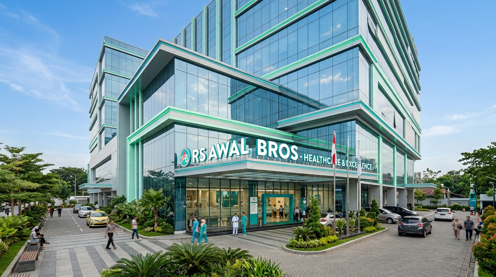

Poliklinik Spesialis
Layanan konsultasi medis mendalam dengan berbagai dokter spesialis berpengalaman mulai dari penyakit dalam hingga bedah.
RS Awal Bros Dumai menghadirkan pusat layanan medis terpadu berbasis teknologi modern, didukung oleh tim dokter spesialis ternama untuk kesehatan optimal Anda dan keluarga.
Dokter Spesialis
Tempat Tidur
IGD Siaga
Kepuasan Pasien

Cek ketersediaan spesialis
Pilihan kelas rawat inap
Panggilan ambulans cepat
Daftar tanpa perlu antre

RS Awal Bros Dumai didirikan untuk memenuhi kebutuhan masyarakat Kota Dumai dan sekitarnya akan layanan kesehatan berkualitas tinggi, terjangkau, dan aman. Kami memprioritaskan keselamatan pasien melalui penerapan standar medis internasional.
Pusat fasilitas medis terpadu dan modern di RS Awal Bros Dumai untuk memberikan perawatan kesehatan terbaik bagi Anda.
Layanan konsultasi medis mendalam dengan berbagai dokter spesialis berpengalaman mulai dari penyakit dalam hingga bedah.
Fasilitas rawat inap yang nyaman dengan berbagai pilihan kelas, didukung pemantauan medis 24 jam oleh tenaga profesional.
Pemeriksaan diagnostik akurat dengan peralatan medis mutakhir untuk membantu penegakan diagnosa yang presisi.
Penanganan medis darurat cepat dan siaga 24 jam dengan tim trauma center dan armada ambulans darurat lengkap.
Paket pemeriksaan kesehatan menyeluruh untuk individu, calon karyawan, maupun skrining kesehatan berkala perusahaan.
Fasilitas kateterisasi jantung terkini untuk penanganan penyumbatan pembuluh darah jantung dan pemasangan ring.
Periksa Indeks Massa Tubuh (BMI) Anda secara instan untuk mengetahui rekomendasi kesehatan dasar.